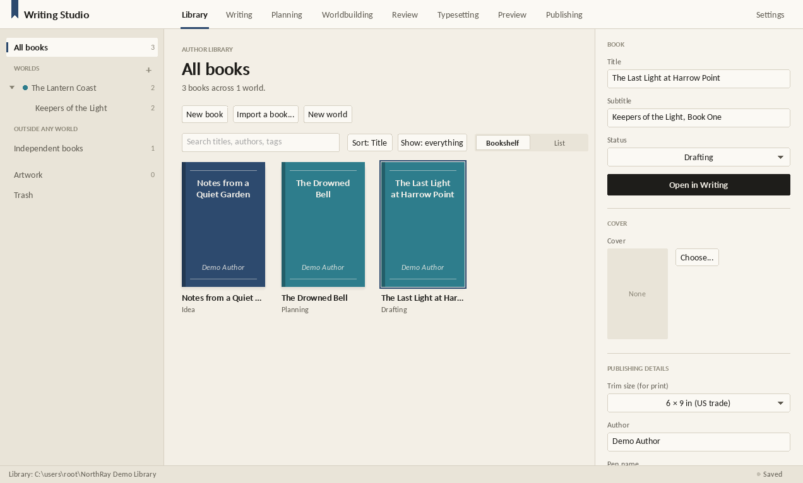
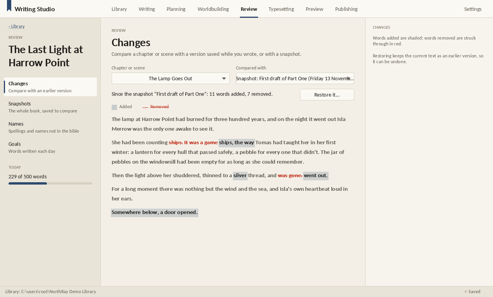

Writing and publishing
NorthRay Writing Studio
A writing and publishing studio for authors: worlds, series and books, through to finished editions.
NorthRay Software · Preview
Screenshots

The author library: worlds, series and books on a bookshelf. 
Planning: every chapter as a card, with status, viewpoint and word targets. 
Worldbuilding: the world's bible of characters, places, groups and lore. 
Review: what changed since a snapshot, word by word. 
Typesetting: the book laid out as printed pages. 
Publishing: a pre-flight check, spine width and print files for each edition.


About
NorthRay Writing Studio is a desktop app for writing and publishing books. It organises your work as worlds, series and books, and each book as parts, chapters and scenes, written in a calm, page-like editor that saves as you type, keeps earlier versions, and takes comments on the text. Pictures live in an artwork library, with crops and print-resolution checks that never touch the originals. Existing books can be imported from EPUB, Word, OpenDocument, HTML, Markdown and plain text, with PDF import as an experiment. Each book has a planning board, and each world keeps a bible of its characters, places and lore, showing where each appears in the books. Books are typeset into finished pages and previewed as an ebook on different devices, then exported as a print-ready PDF (PDF/X-1a) and an EPUB, after a pre-flight check that also gives the spine width for the cover. Everything stays on your PC unless you choose to keep a world in a GitHub repository of your own, to write on more than one computer; no NorthRay account or subscription is needed.
What's in it
- IncludedAuthor Library: worlds, series, books
- IncludedManuscript editor: parts, chapters, scenes, versions
- IncludedImport: EPUB, Word, OpenDocument, HTML, Markdown, text (PDF experimental)
- IncludedArtwork and illustration control
- IncludedProfessional typesetting
- IncludedPrint and ebook previews
- IncludedEPUB and print-ready PDF export (first version)
- IncludedWorldbuilding: characters, places, lore and where they appear
- IncludedPlanning board: synopses, status, viewpoint, word targets
- IncludedReview: changes, snapshots, name checks, writing goals
- IncludedComments on the text
Features
- Author Library: worlds, series and books, with standalone and independent books
- Manuscript editor: parts, chapters and scenes, semantic paragraph styles, scene breaks, pictures and spell-check
- Saves as you type, keeps earlier versions of every chapter and scene, and a Trash you can restore from
- Artwork library: crop, size and align pictures without changing the originals, with print-resolution checks for your trim size
- Import from EPUB, Word (.docx), OpenDocument (.odt), HTML, Markdown and text; PDF import is experimental
- Reading order and chronological order for every series; drag and drop to organise
- Typesetting: justified, hyphenated pages with running heads and page numbers, shown as spreads, and exported as a PDF
- Worldbuilding: a bible of characters, places, groups, things, lore and events for each world, with relationships and the chapters each appears in
- Planning board: every chapter and scene as a card with its status, synopsis, viewpoint character, who appears in it, and word targets
- Review: compare any chapter with earlier versions or whole-book snapshots, check names against the world's bible, and track daily writing goals
- Comments: notes pinned to words in the text, resolved when they're dealt with, and listed for the whole book in Review
- Ebook preview on a phone, an e-reader and a tablet, with the reader's own text size, font and page colour
- Publishing: paperback, hardback, large-print and ebook editions with their own ISBNs; print-ready PDF/X-1a and EPUB 3 export, a pre-flight checklist, and spine and cover measurements
- Sync with GitHub: keep a world, pictures included, in your own private repository and write on more than one computer
What's new
Version 0.86.0 · 2026-11-26
- Ages are worked out from the calendar for each book: from Born: (or Birthday: with a Born: year), as of the book's first dated chapter or a date chosen in Plan tools › Ages in the bible. When a birthday falls inside a book its page says so and names the chapter; a year alone gives "about"; years count through eras, month 0 and the years before the first era.
- Ageless: yes and Appears: 30 lines show "Ageless" or "Looks 30" in place of a worked-out age.
- The ages are on the entry's page, in the shared bible's PDF and website, and in reader's guides only up to their book.
- Checks flags a typed Age that no worked-out age agrees with, an age in the text that the calendar contradicts, a chapter whose opening ("over a year later", "three days later", "the next morning") disagrees with the timeline's dates, and bible names written with the wrong capitals ("mimic" for the Mimic), with Change everywhere and It's fine.
Version 0.85.0 · 2026-11-26
- Export the plan now gives back exactly the same plan when imported again, Writing's changes included: chapters after a part come back outside it (an "End of part" line), front and back matter keep their place ("Matter: front"), and each beat's notes travel too ("Beat note: Setup: …").
- Plan tools has a per-book choice for the shared bible's quotes: only from chapters that Who's there or the viewpoint puts a character in, or also from chapters with nobody chosen whose text names them.
- Typesetting can print each chapter's date from Planning's timeline under its heading, with month names or numbers and the era short, in full or left off. The ebook gets the same. Share the bible has the same choices for the dates in its plans.
- Typesetting's design card and Preview's reader's settings scroll with the wheel again, so everything below the window's foot can be reached.
- When a calendar is saved after a plan, the timeline now starts at the plan's earliest date rather than whichever date it happened to read first.
Version 0.84.0 · 2026-11-26
- Imports read the singular and plural form of every relationship and family line (Enemy and Enemies, Mentor and Mentors), and a relationship between people written anywhere on a page (under the summary, Details or a section) becomes a link.
- Two pages in one import no longer undo each other: a link one page makes stays when a later page lists other relationships of that kind, and the note says how many were kept.
- Before an import that changes entries already in the bible, the confirmation lists the new pages, the entries made for names they mention, and for each entry the sections, details and links it would lose, worked out on a copy of the library. Cancel leaves everything as it was.
- Lines that aren't part of any field, section or relationship are listed in the note after importing instead of being dropped without a word.
Version 0.83.0 · 2026-11-26
- A plan now replaces the book's plot threads and structure too: threads the plan doesn't list are removed, and the book's structure is cleared when the plan names none. The note after importing names what was removed. A text of threads alone removes nothing.
- Publisher
- NorthRay Software
- Version
- 0.162.0
- Download
- 14.1 MB
- Requires
- Windows 10 or 11, 64-bit
- Account
- Not needed